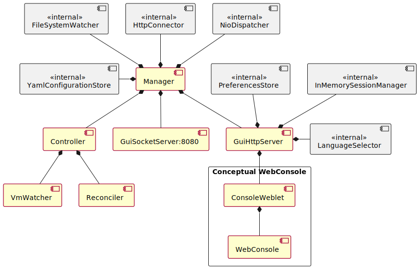
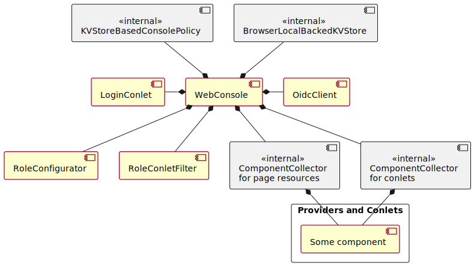

Package org.jdrupes.vmoperator.manager
In framework terms, the Manager
is the root component of the application. Two of its child components,
the Controller and the WebGui
provide the functions that are apparent to the user.
The position of the components in the component tree is important
when writing the configuration file for the manager and therefore
shown below. In order to keep the diagram readable, the
components attached to the
WebConsole are shown in a
separate diagram further down.

Component hierarchy of the web console:

The components marked as “<<internal>>” have no configuration options or use their default values when used in this application.
As an example, the following YAML configures a different port for the GUI and some users. The relationship to the component tree should be obvious.
"/Manager":
"/GuiSocketServer":
port: 8888
"/GuiHttpServer":
"/ConsoleWeblet":
"/WebConsole":
"/LoginConlet":
users:
...
Developers may also be interested in the usage of channels by the application’s components:
-
ClassesClassDescriptionAbstractMonitor<O extends io.kubernetes.client.common.KubernetesObject,
L extends io.kubernetes.client.common.KubernetesListObject, C extends Channel> A base class for monitoring VM related resources.Delegee for reconciling the config mapSome constants.Implements a controller as defined in the Operator Whitepaper.Watches for changes of display secrets.Delegee for reconciling the display secretDelegee for reconciling the serviceThe application class.Adapts Kubenetes resources for instances of the Runner application (the VMs) to changes in VM definitions (the CRs).Watches for changes of services.Delegee for reconciling the stateful set (effectively the pod).Watches for changes of VM definitions.